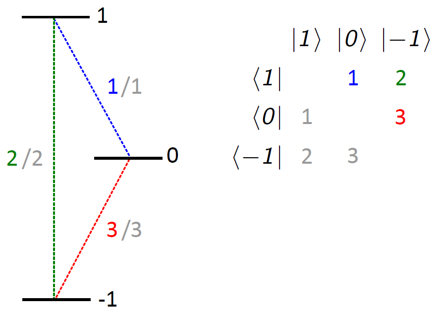
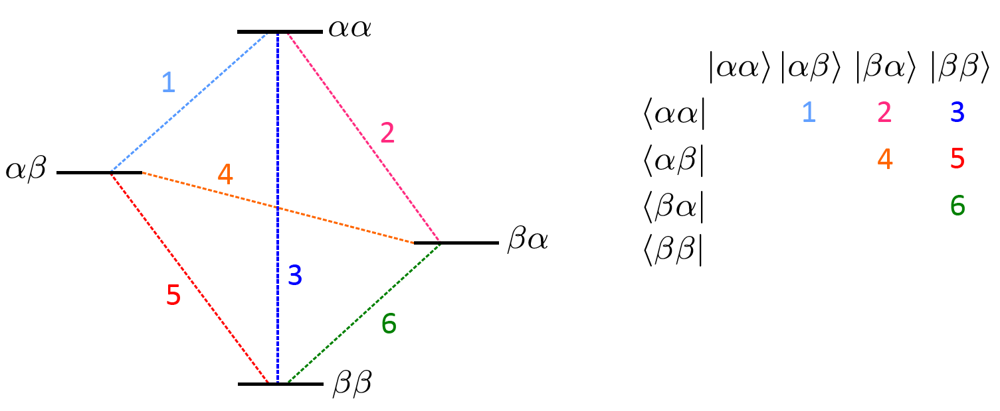

- EasySpin
- Documentation
- Publications
- Website
- Academy
- Forum
This second part of the user guide on saffron explains how to simulate pulse EPR experiments with features that need the general full method, and how to follow the spin dynamics of a single spin system during a pulse sequence.
If you have not read the first part of the guide yet, it can be found here.
The fast manifold method handles one electron spin with S = 1/2, with or without nuclei, with ideal or rectangular pulses and a single detection point at the end of the sequence. For everything else, saffron uses the full method, for example for
The full method follows the state of the complete spin system step by step in time, by solving the Liouville-von Neumann equation for piecewise constant Hamiltonians. The reference page has a complete table of what each method supports.
Setting up the experiment is the same as in part I of the user guide. The main difference is that pulses usually have a finite length and a shape, which adds more fields to the pulse definition.
In this guide, we are going to cover the following topics:
Here is a simple example of a user-defined three-pulse ESEEM experiment with transient detection. It extends the example at the end of this section in part I of the user guide. By now you should be familiar with how to set up a user-defined experiment, so we are only going to discuss the additional fields:
% Spin system
Sys.S = 1/2;
Sys.Nucs = '1H';
Sys.A_ = [5 2]; % MHz
% Experiment
p90.Flip = pi/2;
p90.tp = 0.020; % pulse length, µs
tau = 0.2; % µs
Exp.Field = 350; % mT
Exp.Sequence = {p90 tau p90 0 p90 tau};
Exp.mwFreq = 9.8; % GHz
Exp.DetWindow = [-0.1 0.1]; % add a detection window for recording transients, µs
Exp.nPoints = 5; % only 5 data points
Exp.Dim1 = {'d2', 0.1}; % increment 2nd delay by 0.1 µs
We added three lines: p90.tp, Exp.mwFreq and Exp.DetWindow.
p90.tp gives the pulses a length. With Exp.mwFreq we tell saffron the carrier frequency for these monochromatic pulses (frequency-swept pulses will be discussed later), and with Exp.DetWindow we request a detection window with a width of 200 ns, centered around the end of the second τ period. The detection window is what needs the full method here.
We also set Exp.nPoints to 5 to make the output more comprehensible and to save time.
Since no coherence pathways are selected, the transient contains not only the stimulated echo, but also free induction decays and other echoes of the three pulses. How to keep only the stimulated echo is shown in the section on phase cycling.
If the above is run with saffron without any output arguments
saffron(Sys,Exp)
a figure is generated. The two horizontal axes are the data points in the indirect dimension and the time of the transient in microseconds, and the color shows the signal.
Detection is controlled with the field Exp.DetWindow. It allows you to use single-point detection as well as transient detection.
The position of the detection is set in relation to the end of the last element of the pulse sequence, which is the zero time of the detection.
This last element can be a pulse or a delay. You are free to position your detection any way you want, with the only requirement that it must not overlap with the last pulse.
Take for example the pulse sequence for the stimulated echo:
Exp.Sequence = {p90 tau p90 0 p90 tau};
The echo that we want to detect appears more or less centered around the end of the second τ period. Hence, we can set the detection window such that it is centered around that time.
Exp.DetWindow = [-0.1 0.1]; % µs
The detection window provides a lot of freedom in where you want to detect. To detect an FID of a length τ after the last pulse, we could for example write:
% Keeping the same sequence as above
Exp.Sequence = {p90 tau p90 0 p90 tau};
Exp.DetWindow = [-tau 0];
% Omitting the last delay
Exp.Sequence = {p90 tau p90 0 p90};
Exp.DetWindow = [0 tau];
Both give the same signal. In the second one, the last element is the pulse, which means the zero time of the detection window is the end of the pulse.
Exp.DetWindow also allows single-point detection:
Exp.Sequence = {p90 tau p90 0 p90 tau};
Exp.DetWindow = 0;
To detect during the whole sequence, including the pulses, use 'sequence'. The time axis then starts at the beginning of the sequence, and info.EventTimes gives the start and end times of each element of the sequence, e.g. to select the signal during one of the delays:
Exp.DetWindow = 'sequence'; [t,y,info] = saffron(Sys,Exp); info.EventTimes % one row [start end] per element of Exp.Sequence, µs
The detected transients must have the same length for all points of the indirect dimensions. If an indirect dimension changes the length of a detected element, e.g. a delay during detection with 'sequence', run one simulation per point instead.
By default, the signal is the expectation value of Ŝ+ of all electron spins: its real part corresponds to Ŝx and its imaginary part to Ŝy. To detect other quantities, give detection operators in Exp.DetOperator, in the syntax of sop or as matrices. The signal then has one column per operator:
Exp.DetOperator = {'z1','+1'}; % Sz and S+ of the first electron spin
Exp.DetOperator = {'x1','y1','z1'}; % Bloch vector of the first electron spin
Exp.DetOperator = {'z(1|2)','e(2)'}; % polarization between levels 1 and 2, population of level 2
The signal of each operator is its expectation value, divided by the squared norm of the operator; e.g. Sz of an electron spin starts at -1 in thermal equilibrium.
Another field that can be specified is the down-conversion frequency Exp.DetFreq.
By default, saffron uses Exp.mwFreq for down-conversion.
For down-conversion with a different frequency, it has to be specified in GHz:
Exp.DetFreq = 9.7; % down-conversion with 9.7 GHz Exp.DetFreq = 0; % no down-conversion (lab frame)
The signal is then given in a frame rotating at Exp.DetFreq, independent of the simulation frame. Operators without electron coherence, such as Sz, are not affected by it.
The last field related to detection is Exp.DetIntegrate, which, if switched on, tells saffron to integrate the signal over the detection window. The result is the area under the detected signal (in signal units times microseconds), so it does not depend on Exp.DetTimeStep.
Something to keep in mind: The entire detection window is used. This means that if there are other echoes within the detection window, those will get integrated as well and might interfere with your data.
saffron not only supports monochromatic rectangular pulses, but works with all pulse shapes that are described in the documentation and the user guide of pulse.
Note that if you work with frequency-swept pulses, refocusing conditions might be slightly different from what you are used to when working with rectangular pulses, e.g. the echo position might shift slightly, or the last pulse has to have half the length of the previous pulses to ensure proper refocusing.
Let us create a two-pulse echo sequence with linearly swept chirp pulses with smoothed edges. First, we start with the spin system:
Sys.S = 1/2; Sys.g = [2.00906 2.0062 2.0023]; Sys.A = [11.5 11.5 95]; Sys.Nucs = '14N';
Next, we set up the pulses. As we are now using frequency-swept pulses, a lot more fields need to be provided:
% 90°-pulse Chirp90.Type = 'quartersin/linear'; Chirp90.tp = 0.200; Chirp90.Flip = pi/2; Chirp90.Frequency = [-120 120]; % excitation band, MHz Chirp90.trise = 0.030; % 180°-pulse Chirp180.Type = 'quartersin/linear'; Chirp180.tp = 0.100; Chirp180.Flip = pi; Chirp180.Frequency = [-120 120]; % excitation band, MHz Chirp180.trise = 0.030;
With the field Frequency we define the frequency sweep, in MHz. This is defined in relation to Exp.mwFreq, which we will add later.
trise is the rise time and specific to the amplitude modulation function that we chose with Type = 'quartersin/linear'.
Now the last thing to do is to set up the Exp structure.
Since we know that the echo position depends on the inter-pulse delay and the length of the refocusing pulse, we slightly adapt the sequence to keep the echo centered in our detection window.
tau = 0.5;
Exp.Sequence = {Chirp90 tau Chirp180 tau+Chirp180.tp};
Exp.mwFreq = 9.1;
Exp.Field = 324.9;
Exp.DetWindow = [-0.02 0.02];
The phase of the echo depends on the pulses. If the echo comes out negative, you can make it positive by changing the phase of both pulses by 180°:
Chirp90.Phase = pi; Chirp180.Phase = pi;
In part I of the guide we discussed how to change delays in any dimension, so we are not going to cover it here again.
Instead, we are going to have a look at how to sweep pulse parameters. Every pulse parameter can be changed during the course of the experiment. For more details, see here.
Now, let us gradually decrease the flip angle of the second pulse in the above example. All we have to do is add the following lines:
Exp.nPoints = 20;
Exp.Dim1 = {'p2.Flip' -pi/30};
Now, let us change the frequency band of both pulses. With
Exp.nPoints = 20;
Exp.Dim1 = {'p1.Frequency,p2.Frequency' [+5 -5]};
we reduce the bandwidth of both pulses by 10 MHz each step.
It is also possible to combine different pulse parameters:
Exp.nPoints = 20;
Exp.Dim1 = {'p1.Frequency,p2.Frequency' [+5 -5]; 'p2.Flip' -pi/30};
combines the two above examples.
You can also change different parameters of the same pulse along different dimensions:
Exp.nPoints = [10 10];
Exp.Dim1 = {'p2.Frequency' [+5 -5]};
Exp.Dim2 = {'p2.Flip' -pi/30};
This gives you complete freedom with designing your experiment or running pulse optimization routines.
saffron can phase-cycle the pulses with Exp.PhaseCycle.
Let us have a look at the three-pulse ESEEM sequence:
p90.tp = 0.020;
p90.Flip = pi/2;
p90.Phase = pi;
tau = 0.5;
T = 1;
Exp.Sequence = {p90 tau p90 T p90 tau};
Exp.mwFreq = 9.1;
Exp.Field = 324.9;
Exp.DetWindow = [-0.1 0.1];
Besides the stimulated echo, the three pulses create other signals, such as free induction decays and unrefocused echoes. In a real sample, the unrefocused signals decay quickly because the spins precess at many different frequencies. In the simulation, each orientation is a single set of spins without this spread, so these signals do not decay and the phase cycle has to remove them. To keep only the stimulated echo, cycle the first pulse in four steps of 90° and the third pulse in two steps of 180°, with all eight combinations. In each step, the receiver phase is the negative of the sum of the two pulse phases.
Exp.PhaseCycle lists the steps as rows. Each row gives the phase of each pulse, added to its Phase, and the receiver phase, all in radians:
% pulse 1 pulse 2 pulse 3 receiver
Exp.PhaseCycle = [0 0 0 0
pi/2 0 0 -pi/2
pi 0 0 -pi
3*pi/2 0 0 -3*pi/2
0 0 pi -pi
pi/2 0 pi -3*pi/2
pi 0 pi -2*pi
3*pi/2 0 pi -5*pi/2];
The signal is the average over the steps, each multiplied by e-iφ with its receiver phase φ.
Such a nested phase cycle, with all combinations of the phase steps of the individual pulses, can also be generated with ndgrid:
[ph1,ph3] = ndgrid((0:3)*pi/2,[0 pi]); Exp.PhaseCycle = [ph1(:) 0*ph1(:) ph3(:) -ph1(:)-ph3(:)];
The list of steps can be any phase cycle, e.g. one where several pulses change phase together. For a nested phase cycle, saffron adds up the steps of each pulse right after the pulse, so the simulation takes about as long as for a single step. Other phase cycles are simulated step by step, but the steps share the pulse propagators.
Phase cycles work with both methods. Instead of a phase cycle, you can also select the coherence pathways directly with Exp.Pathways, e.g. Exp.Pathways = '+0-' for the stimulated echo.
The simplest way to use relaxation is to apply the same longitudinal and transverse relaxation times (in microseconds) to all transitions of the spin system. A 1.5-microsecond longitudinal relaxation time and a 0.5-microsecond transverse relaxation time can be assigned to all transitions in the system with
Sys.T1 = 1.5; % longitudinal relaxation time in microseconds Sys.T2 = 0.5; % transverse relaxation time in microseconds
In some cases, it might be of interest to investigate the effect of only one type of relaxation: If only T1 or T2 is given (or the other one is zero), the other type of relaxation is switched off.
Relaxation acts on the energy levels of the spin system. T2 is the decay time of the coherence between two levels. A scalar T2 is applied to all electron transitions. Nuclear transitions, which do not change the state of any electron spin, are not affected, since nuclear coherences decay much more slowly than electron coherences. This keeps the nuclear modulations in ESEEM and HYSCORE. T1 describes the transfer of population between two levels: if only two levels were involved, the difference of their populations would return to equilibrium with the time constant T1. A scalar T1 is applied to every pair of levels. With more than two levels, the populations therefore return to equilibrium faster than with T1, since there are more pathways.
Relaxation can also be limited to some elements of the sequence, with one entry of Opt.Relaxation per element of Exp.Sequence. E.g., the following switches relaxation off during a pulse and on during the delay after it:
Exp.Sequence = {p90 2};
Opt.Relaxation = [0 1];
By default, the spin system relaxes toward its initial state. To relax toward a different state, give it as a density matrix in Sys.eqState.
In systems with larger spin quantum numbers or several spins, relaxation times can differ for different types of transitions. If you do not want to use the same relaxation time for each transition, relaxation times can also be provided in matrices. To set up the input correctly, some knowledge of the spin system and the resulting density matrices is required: The rows and columns of the matrices refer to the Zeeman basis states. For a single-spin system they are in descending order of m, left to right (more at sop). Each energy level is identified with the Zeeman basis state that it resembles most. If the levels are strongly mixed, this assignment is ambiguous, and you get a warning. E.g., an S = 1 system has three states and the three pathways connecting them can be described by a 3 × 3 (density-like) matrix:

With this we can now design matrix input for T1 and T2, that can be translated into a relaxation superoperator:
Sys.T1(1,2) = 1.5; % transition 1 (blue) Sys.T1(1,3) = 0.5; % transition 2 (green) Sys.T1(2,3) = 1.4; % transition 3 (red) Sys.T2(1,2) = 0.3; % transition 1 (blue) Sys.T2(1,3) = 0.1; % transition 2 (green) Sys.T2(2,3) = 0.3; % transition 3 (red)
Sys.T1 = 0 1.5 0.5 0 0 1.4 0 0 0 Sys.T2 = 0 0.3 0.1 0 0 0.3 0 0 0
It suffices to define the upper triangle only (as done above). But for longitudinal (not so for transverse) relaxation there can be a difference between "up" (|+1>→|0>) and "down" (|0>→|+1>) pathways. If you are interested in assigning different relaxation times for opposing directions, you can do this by using the lower triangle:
Sys.T1(2,1) = 1.3; % transition 1 (grey) Sys.T1(3,1) = 0.7; % transition 2 (grey) Sys.T1(3,2) = 1.1; % transition 3 (grey)
Sys.T1 = 0 1.5 0.5 1.3 0 1.4 0.7 1.1 0
The population is transferred from level j to level i with the rate 1/(2·T1(i,j)). For elements of the lower triangle of T1 that are zero, the corresponding element of the upper triangle is used, so that both directions have the same rate.
Pairs of levels without a relaxation time (matrix element 0) do not relax. Elements on the diagonal are ignored.
Relaxation times in the lower triangle of T2 are ignored.
Unlike a scalar T2, a matrix T2 is applied exactly as given, also to nuclear transitions. A matrix with the same value everywhere therefore also damps nuclear coherences.
Spin systems that contain several spins are assigned relaxation times analogously, but require a slightly deeper insight into ordering of the states: The representation of the operators is in terms of product Zeeman basis states |m1,m2,m3,..>, where m1 is for the first spin, m2 is for the second spin, etc. The basis functions are again in descending order of mi, left to right. E.g. for two coupled (electron) spins with S = 1/2, you get the following energy level scheme:

To see what pulses do to the spins, it is often easiest to look at a single spin system, rather than a powder. For this, simulate a single orientation with the molecular frame along the lab frame, detect during the whole sequence, and detect the quantities you are interested in. Here is the inversion of a spin by a linear chirp pulse:
Sys.S = 1/2; % g = gfree by default
Chirp.Type = 'quartersin/linear';
Chirp.trise = 0.030; % rise time, µs
Chirp.tp = 0.2; % pulse length, µs
Chirp.Frequency = [-50 50]; % frequency band, MHz
Chirp.Flip = pi;
Exp.mwFreq = 9.5; % GHz
Exp.Field = mhz2mt(9500); % mT, on resonance for g = gfree
Exp.MolFrame = [0 0 0]; % single orientation
Exp.Sequence = {Chirp};
Exp.DetWindow = 'sequence'; % detect during the whole sequence
Exp.DetOperator = {'x1','y1','z1'}; % Bloch vector
[t,y] = saffron(Sys,Exp);
plot(t*1000,real(y));
xlabel('t (ns)');
legend('S_x','S_y','S_z');
The spin follows the effective field and ends up inverted, with Sz going from -1 to +1. For frequency-swept pulses, you can give the critical adiabaticity Qcrit or the amplitude Amplitude (in MHz) instead of the flip angle; a Qcrit of 5 gives a nearly complete inversion.
Keep in mind that a single spin system does not give an echo: an echo forms when the magnetization of spins with different resonance frequencies refocuses. To simulate an echo, use a powder, or sum the signals of spin packets with different resonance frequencies (see the example spinecho_gaussianline).
Transition-selective detection operators from sop show how pulses move populations between levels. For example, for S = 3/2, 'z(2|3)' is the polarization of the central transition. In the example populationtransfer, two chirp pulses on the outer transitions increase this polarization. To excite spins selectively, give them different resonance frequencies (e.g. different g values) and set the frequencies of the pulses (Frequency) to their offsets from Exp.mwFreq, as in the example spin_selective_excitation.
The examples contain more simulations of this kind, e.g. adiabatic passage, inversion pulses, Rabi oscillations, relaxation, resonator effects, and the spin echo of a nitroxide with shaped pulses. More on the theory of adiabatic passage and shaped pulses can be found in
Gunnar Jeschke, Stephan Pribitzer, Andrin Dolland
Philipp Spindler, et al.
In some simulations you may observe echoes in your time trace that should not be there.
Besides physical reasons (incomplete phase cycling, different refocusing conditions,...), such artifact echoes can arise from an aliasing effect if the spectrum is insufficiently sampled (not enough orientations are used).
This can easily be checked: By increasing the number of samples from your distribution, the artifact echoes should move, spread further apart or vanish, while physical echoes stay in place.
The number of orientations that are being used for the simulation can be controlled with Opt.GridSize.
By default, saffron uses Opt.GridSize = 31.
For simulations using the full method, saffron usually changes into a simulation frame that rotates slower than the lab frame, about 2.5 GHz below the microwave frequency.
This has the advantage that a much larger time step can be used (which speeds up the simulation).
In this frame, the high-field approximation is used, and pulses keep only the part of their field that rotates with the spins.
In most cases, this does not affect the outcome of the simulation.
However, if the electron spin states are strongly mixed, e.g. by large zero-field splittings, this can be inaccurate, and you get a warning.
You can then switch the frame shift off by setting Opt.SimFreq = 0, or set Opt.SimFreq to a value you find appropriate.
For example: For a Q-band simulation where all pulses have frequencies between 33 and 34 GHz, saffron selects 31 GHz as simulation frequency.